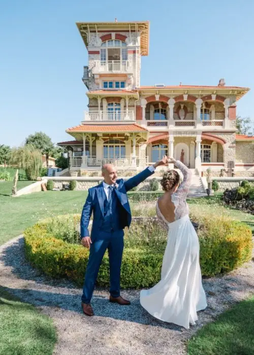
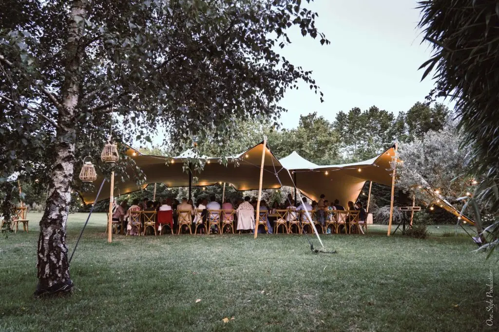

Would you like a wedding in a private villa, surrounded by the people who matter most to you? Many reception venues are waiting for you on the Arcachon Bay, for weddings large or small.
A venue to suit your wishes
Choosing the venue is essential for your big day. Intimate and warm or rustic, your reception venue will match the atmosphere you have chosen for your wedding.
Toes in the sand, a sunset or the sea air: no need to choose when you can have them all. So don't worry, the Arcachon Bay can welcome you in this idyllic setting for your long-awaited day.
It is important to ask yourselves the right questions. But don't panic, the venues will charm you effortlessly.
The Arcachon Bay, a little paradise!
Opening onto the sea, the Arcachon Bay offers a whole variety of natural sites perfect for a wedding, especially if you'd like a beach theme. For example, you can say yes in a secluded little cove, beside a jetty or aboard a sailing boat for a romantic ceremony out on the water.
You can also opt for a more rustic theme, with a ceremony in the pine forests surrounding the town, for a natural atmosphere typical of south-west France.
Simpler can be lovely too
More classic venues can also open their doors to you, such as restaurants, inns or courtyards, where a smaller number of guests is no problem at all.
As you can see, the possibilities are many; all that's left is to choose what suits you best!

I'm here to help!
My wedding planning agency is based in Bordeaux, and I work throughout the Gironde, including the Arcachon Bay. One of the most important tasks in preparing a wedding is finding the ideal venue for the couple. It can turn out to be a complex mission.
So to avoid any stress, you can entrust me with your project for bespoke planning, managed from A to Z, and together we'll find your little corner of paradise. So don't hesitate to dream big for your wedding, and get in touch!
Lovely Day Event offers several services
Wedding planning
I step in at every stage of your preparations and guide you through your choices, bringing ideas and suggestions so that your wedding looks like no one but you.
Wedding design
Creative and passionate, I am a certified Wedding Designer and I create a scenographic atmosphere that matches the theme of your wedding.
On-the-day coordination
I will be the conductor of your day, managing the suppliers, the set-up of your decor and the smooth running of this beautiful day.